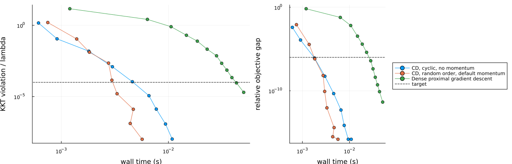

Comparing lasso solvers at equal accuracy
This example compares three solver configurations on one seeded lasso by the time each needs to reach the same accuracy. The script computes the accuracy from the problem data and the returned coefficients and does not read it from the solvers. The solvers are cyclic coordinate descent with momentum=false, coordinate descent with order=:random, its default momentum setting and a seeded generator for each run, and dense proximal gradient descent.
Download this example as a Jupyter notebook
Why time to equal accuracy
Each solver stops by its own rule, documented with CDSolver and ProximalOptions. The rules measure different quantities: for coordinate descent a change of the coefficients over a pass, for proximal gradient descent changes of the objective and of the iterate and a gradient/proximal residual. The tolerances of different solvers are not defined on a common scale. The converged flag reports that the solver's own rule was met and is not a certificate of optimality. Timing each solver up to its own converged flag compares the solvers at the accuracies that their rules give in that run. Here each of the three solvers is run over a sweep of tolerances, each result is scored by an independent objective gap and KKT violation, and the reported time is the time of the first setting in the sweep that meets both thresholds gaptarget and kkttarget defined below.
The problem
The design has n = 1000 rows and p = 200 columns that follow an AR(1) pattern with correlation rho between neighbouring columns. Twenty coefficients are nonzero and the noise has unit variance. The regularization is lambda = lambda_max / 100, where lambda_max = maximum(abs, X' * y) / n is the smallest lambda at which the zero vector satisfies the KKT conditions of the lasso objective below.
using LinearAlgebra, Printf, Random, ProximalBase, ProximalSolvers
rho = 0.9
n, p = 1000, 200
rng = Xoshiro(1)
Z = randn(rng, n, p)
X = similar(Z)
X[:, 1] = Z[:, 1]
for j in 2:p
X[:, j] = rho * X[:, j-1] + sqrt(1 - rho^2) * Z[:, j]
end
beta0 = zeros(p)
beta0[1:5:100] .= repeat([2, -1.5, 1, -1, 0.8, -0.6, 0.5, -0.4, 0.3, -0.2], 2)
y = X * beta0 + randn(rng, n)
lambda_max = maximum(abs, X' * y) / n
lambda = lambda_max / 100
f = (1 / n) * LeastSquaresLoss(y, X)
g = NormL1(lambda);Independent measures
The two functions below compute from the problem data X, y, n and lambda and from the coefficient vector they are given; they use no solver diagnostics, cached quantities or reported values. The objective is the lasso objective. The KKT violation applies the rule of the page "Sparsity and an optimality check": for a zero coefficient it is the excess of the gradient magnitude over lambda, and for a nonzero coefficient it is the distance of the gradient from -lambda * sign(beta[j]). It is divided by lambda below.
objective(beta) = sum(abs2, y - X * beta) / (2n) + lambda * sum(abs, beta)
function kktviolation(beta)
grad = -X' * (y - X * beta) / n
maximum(j -> iszero(beta[j]) ? max(abs(grad[j]) - lambda, 0.0) :
abs(grad[j] + lambda * sign(beta[j])), eachindex(beta))
end;Reference solution
The reference objective value fstar comes from cyclic coordinate descent run to a very small tolerance with relative=false, started from zero. The assertions check that its independently measured KKT violation is small and that the independent objective matches the objective the solver reports.
reference = zeros(p)
refresult = solve!(reference, f, g,
CDSolver(order=:cyclic, momentum=false, relative=false, tol=1e-14, maxpasses=1_000_000))
fstar = objective(reference)
@assert refresult.converged
@assert kktviolation(reference) / lambda <= 1e-10
@assert isapprox(fstar, refresult.minimum; rtol=1e-10)Sweeps
Each run of the sweeps starts from the zero vector. The wall time of a setting is the minimum over five timed repetitions of the solve! call alone, after one warm-up call; the solver object is built before the timer starts. Each random-order coordinate descent run gets a new Xoshiro generator with the same seed. For each setting the sweep records the time, the number of passes (coordinate descent) or iterations (proximal gradient descent), the converged flag, the relative objective gap (F - fstar) / abs(fstar) and the KKT violation divided by lambda. Coordinate descent is swept over tol and proximal gradient descent over one scale used for ftol, xtol and gradtol together, with a large maxiter.
function measure(prepare; repetitions=5)
besttime = Inf
beta = zeros(p)
result = nothing
for k in 1:repetitions + 1
run! = prepare()
beta = zeros(p)
elapsed = @elapsed result = run!(beta)
k > 1 && (besttime = min(besttime, elapsed))
end
besttime, beta, result
end
function sweep(settings, prepare, work)
map(settings) do setting
time, beta, result = measure(() -> prepare(setting))
(setting = setting, time = time, work = work(result), converged = result.converged,
gap = (objective(beta) - fstar) / abs(fstar), kkt = kktviolation(beta) / lambda)
end
end
cdseed = 7
cdtols = 10.0 .^ (-2:-1:-10)
pgdscales = 10.0 .^ (-2:-1:-13)
cyclic = sweep(cdtols,
tol -> (solver = CDSolver(order=:cyclic, momentum=false, tol=tol);
beta -> solve!(beta, f, g, solver)),
result -> result.passes)
randomorder = sweep(cdtols,
tol -> (solver = CDSolver(order=:random, rng=Xoshiro(cdseed), tol=tol);
beta -> solve!(beta, f, g, solver)),
result -> result.passes)
pgd = sweep(pgdscales,
scale -> (method = ProximalGradientDescent();
options = ProximalOptions(maxiter=200_000, ftol=scale, xtol=scale, gradtol=scale);
beta -> solve!(beta, f, g, method, options)),
result -> result.iterations);Time to the target accuracy
A setting reaches the target when its relative objective gap is at most gaptarget and its KKT violation divided by lambda is at most kkttarget. The time to target of a solver is the time of the first setting in its sweep, from the loosest to the tightest, that reaches the target. A solver with no such setting is reported as not reached. The last column counts the settings in the sweep that the solver flagged converged while the KKT violation divided by lambda exceeded flagtol.
gaptarget = 1e-6
kkttarget = 1e-4
flagtol = 1e-3
reached(run) = run.gap <= gaptarget && run.kkt <= kkttarget
sweeps = ["CD, cyclic, no momentum" => (cyclic, "tol", "passes"),
"CD, random order, default momentum" => (randomorder, "tol", "passes"),
"Dense proximal gradient descent" => (pgd, "scale", "iterations")]
function tablerow(name, runs, parameter, unit)
flagged = count(run -> run.converged && run.kkt > flagtol, runs)
k = findfirst(reached, runs)
if k === nothing
@sprintf("| %s | not reached | not reached | not reached | not reached | not reached | %d of %d |",
name, flagged, length(runs))
else
run = runs[k]
@sprintf("| %s | %s = %.0e | %.2f | %d %s | %.2e | %.2e | %d of %d |",
name, parameter, run.setting, 1000 * run.time, run.work, unit, run.gap, run.kkt,
flagged, length(runs))
end
end
header = ["| Solver | Setting at target | Time to target (ms) | Work at target | Objective gap | KKT/lambda | Settings flagged converged with KKT/lambda > $flagtol |",
"|:--|:--|--:|--:|--:|--:|--:|"]
table = join(vcat(header, [tablerow(name, runs, parameter, unit)
for (name, (runs, parameter, unit)) in sweeps]), "\n");The script and the notebook print the table as plain Markdown text. The documentation page shows it rendered.
using Markdown
Markdown.parse(table)| Solver | Setting at target | Time to target (ms) | Work at target | Objective gap | KKT/lambda | Settings flagged converged with KKT/lambda > 0.001 |
|---|---|---|---|---|---|---|
| CD, cyclic, no momentum | tol = 1e-07 | 6.58 | 390 passes | 4.95e-13 | 1.15e-05 | 4 of 9 |
| CD, random order, default momentum | tol = 1e-07 | 3.31 | 176 passes | 8.99e-13 | 1.59e-05 | 4 of 9 |
| Dense proximal gradient descent | scale = 1e-12 | 43.20 | 734 iterations | 7.82e-11 | 9.16e-05 | 8 of 12 |
Each solver must reach the target at some setting of its sweep; this checks accuracy and says nothing about time.
for (name, (runs, parameter, unit)) in sweeps
@assert any(reached, runs) "$name does not reach the target in its sweep"
endAccuracy against time
Each line is one solver and each marker one setting of its sweep. The left panel shows the KKT violation divided by lambda and the right panel the relative objective gap, both against the wall time of the setting on logarithmic axes. The horizontal lines mark the targets. Values below 1e-16 are drawn at 1e-16; the table and the assertions use the unfloored values. The plotting code is part of the documentation page and the notebook and is not run by the plain script.
using Plots
plotfloor(v) = max(v, 1e-16)
kktplot = plot(xscale=:log10, yscale=:log10, xlabel="wall time (s)", ylabel="KKT violation / lambda", legend=false)
gapplot = plot(xscale=:log10, yscale=:log10, xlabel="wall time (s)", ylabel="relative objective gap", legend=:outerright)
for (name, (runs, parameter, unit)) in sweeps
plot!(kktplot, [run.time for run in runs], [plotfloor(run.kkt) for run in runs];
marker=:circle, label=name)
plot!(gapplot, [run.time for run in runs], [plotfloor(run.gap) for run in runs];
marker=:circle, label=name)
end
hline!(kktplot, [kkttarget]; color=:black, linestyle=:dash, label="target")
hline!(gapplot, [gaptarget]; color=:black, linestyle=:dash, label="target")
plot(kktplot, gapplot; layout=(1, 2), size=(1250, 400), bottom_margin=5Plots.mm, left_margin=5Plots.mm)
What to take from this
Each time above is the minimum of five timed repetitions after a warm-up call. The times illustrate how to compare solvers at equal accuracy and are not benchmark evidence.
The times on this page come from the machine that built the documentation, which can be a shared continuous-integration runner.
The random-order timings are for the one seed cdseed. The comparison covers this one problem, with one correlation level, one lambda and one design. Dense proximal gradient descent on a SparseIterate is not part of it. The last column of the table counts, for this problem, the settings whose converged flag was set while the independent KKT measure was above flagtol.